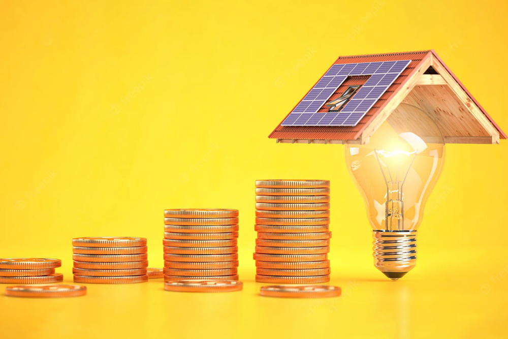

În căutarea soluțiilor durabile și prietenoase cu mediul pentru a satisface cererile noastre tot mai mari de energie, a apărut energia verde. În fruntea acestei revoluții se află panourile solare, o tehnologie care exploatează puterea soarelui pentru a genera electricitate curată și regenerabilă. Pe măsură ce lumea se confruntă cu provocările schimbărilor climatice și cu rezervele limitate de combustibili fosili, adoptarea panourilor solare a devenit un pas crucial către un viitor energetic mai sustenabil și rezistent.
Panourile solare, sau panourile fotovoltaice (PV), sunt dispozitive concepute pentru a capta lumina solară și a o transforma în electricitate. Blocul de construcție fundamental al unui panou solar este celula solară, de obicei realizată din materiale semiconductoare precum siliciul. Atunci când lumina solară lovește aceste celule, excită electronii, creând un curent electric. Acest proces, cunoscut sub numele de efect fotovoltaic, este mecanismul cheie din spatele generării de energie solară.
Unul dintre aspectele cele mai convingătoare ale energiei solare este impactul său minim asupra mediului. Spre deosebire de sursele tradiționale de energie, generarea de energie solară produce puțină sau deloc poluare aeriană sau acvatică și nu emite gaze cu efect de seră nocive. Prin exploatarea puterii soarelui, panourile solare contribuie semnificativ la reducerea dependenței noastre de combustibilii fosili, la atenuarea schimbărilor climatice și la conservarea ecosistemelor.
Pe lângă beneficiile pentru mediu, energia solară oferă avantaje economice. Scăderea costului panourilor solare, împreună cu stimulentele guvernamentale și creditele fiscale, a făcut ca energia solară să devină o opțiune economic viabilă pentru mulți oameni. Industria solară a cunoscut o creștere remarcabilă, creând locuri de muncă și stimulând dezvoltarea economică. De la producție și instalare până la întreținere și cercetare, energia solară a devenit un factor major de ocupare a forței de muncă în economia globală.
